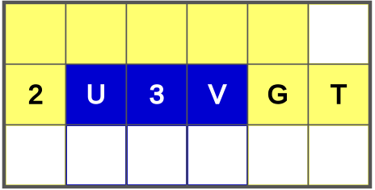
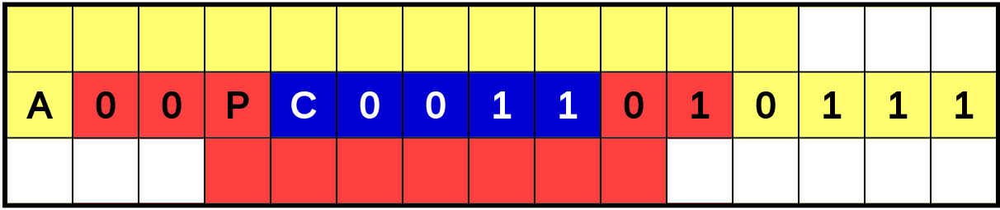
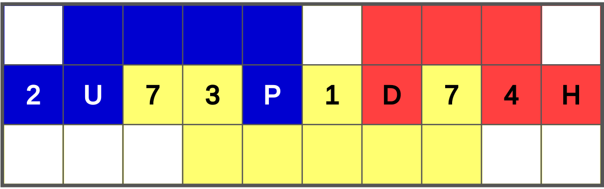
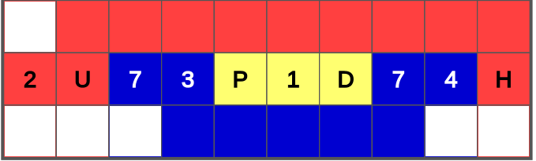

Aïcha et Boris ont écrit un mot de passe sur un bout de papier et veulent le découper de façon à avoir chacun une moitié de l'information.
Dans l'exemple ci-contre, chacun connaît une lettre et un chiffre, soit 26 ·10 = 260 possibilités.
Aïcha, Boris et Céline ont écrit un mot de passe sur un bout de papier et veulent le découper de façon à avoir chacun un tiers de l'information.
Dans l'exemple ci-contre, chacun connait une lettre et un chiffre binaire, soit 26 · 10 = 260 possibilités.
Aïcha, Boris et Céline ont écrit un mot de passe sur un bout de papier et veulent le découper en trois. Il n'est pas possible de faire en sorte que chaque partie contienne autant d'information.
Ils souhaitent donc le découper de sorte que, si une personne malveillante trouve deux des trois morceaux, il lui reste un maximum de mots de passe à tester.
Dans l'exemple ci-contre, une personne qui trouve deux morceaux doit encore trouver une lettre et un chiffre, soit 26·10 = 260 choix de mots de passe. C'est le mieux qu'on peut faire.
Ci-dessous, le format du mot de passe (connu de tous) est CLCLLL LBBLLBBBBBBBBBB CLCCLCLCCL, où :
Formez morceaux colorés comme dans l'exemple. Sélectionnez une couleur, puis cliquez sur des cases pour les colorier de cette couleur ou les remettre en blanc.
Voici un exemple de solution pour cette version :

Le mot de passe contient 4 lettres et 2 chiffres. On peut le découper en deux morceaux de 2 lettres et 1 chiffre chacun.
Pourquoi ça c'est une solution ? Parce qu'elle protège le mieux dans le cas où soit Aïcha soit Boris décident de tricher ou si un ennemi potentiel se procure un des deux morceaux. Si Boris veut tricher il a 262 ·10 = 6760 possibilités à tester pour trouver le secret qui lui manque. Si Aïcha décide de tricher elle a tout autant de possibilités. Au contraire, si on avait donné la moitié de gauche à Aïcha (de format CLC) et la moitié de droite à Boris (de format LLL) on aurait encouragé Boris à tricher. En effet, il aurait eu seulement 26·102=2600 possibilités à tester.
Voici un exemple de solution pour cette version :

Le mot de passe contient 3 lettres et 12 chiffres binaires. On peut le découper en trois morceaux de 1 lettre et 4 chiffres chacun.
Pourquoi ça c'est une solution ? Parce qu'elle protège le mieux dans le cas où deux des trois personnes décident de tricher ou si un ennemi potentiel se procure deux des trois morceaux. Si Aïcha et Boris décident de tricher ils doivent deviner le secret gardé par Céline, qui comprend une lettre et quatre chiffres binaires, soit 26·24 = 416 possibilités à tester. Si Aïcha et Céline s'allient contre Boris elles ont tout autant de possibilités à tester, et rien ne change pour un accord de Boris et Céline contre Aïcha. Au contraire, si on avait donné le tiers de gauche à Aïcha (de format LBBLL), le tiers du milieu à Boris (de format BBBBB) et le tiers de droite à Céline (de format BBBBB) on aurait encouragé Aïcha à collaborer avec Boris contre Céline ou avec Céline contre Boris. En effet, si Aïcha et Boris collaboraient ils auraient pu tester toutes les combinaisons possibles pour le secret de Céline, soit 25=32 possibilités.
Dans cette version, le mot de passe contient 4 lettres et 6 chiffres. On ne peut pas simplement répartir le même nombre de lettres dans chaque morceau. Il faut envisager plusieurs répartitions possibles des lettres et trouver celle qui donne la répartition la plus équilibrée.
Si l'on met 3 lettres dans un morceau, cela correspond déjà à 263 = 17576 possibilités. Les autres morceaux doivent alors se répartir le reste, ce qui si on pouvait équilibrer parfaitement donnerait la racine carrée de 26 · 106 soit 5099 possibilités pour chacun de ces deux morceaux, beaucoup moins que le premier morceau.
Mettre 4 lettres dans un morceau donnerait une répartition encore plus déséquilibrée, donc il est inutile d'essayer.
Avec 2 lettres maximum dans un même morceau, nous avons deux possibilités de répartition des lettres en 3 morceaux :
1) En mettant respectivement 2, 1 et 1 lettre dans les morceaux, les nombres de possibilités correspondants sont déjà de 676, 26 et 26. On distribue les chiffres ce qui revient à rajouter des 0 aux nombres de possibilités respectives. La distribution la plus équilibrée donne 6760, 26000 et 2600.
2) En mettant respectivement 2, 2 et 0 lettre dans les morceaux, les nombres de possibilités correspondants sont déjà de 676, 676 et 1. Distribuer les chiffres donne 6760, 6760 et 10000.
On choisit cette dernière répartition, car c'est celle pour laquelle le nombre minimum de possibilités est le plus grand possible. Cela donne :
Voici deux des manières de découper le mot de passe selon cette répartition :

et

Pourquoi ça c'est une solution ? Parce qu'elle protège le mieux dans le cas où deux des trois personnes décident de tricher ou si un ennemi potentiel se procure deux des trois morceaux.
Le partage de secret est utilisé lorsque l'on souhaite qu'une action soit possible seulement si tous les participants ont donné leur accord. Si tous les participants sauf un se mettent d'accord et essayent de casser le secret du dernier, il faut qu'ils aient un nombre aussi grand que possible de combinaisons à tester.
Exemple : Pour les élections présidentielles de 2012, les Français de l'étranger ont pu voter par internet. Chaque candidat aux élections avait reçu une clé secrète. Pour ouvrir « l'urne numérique » et accéder aux résultats, il fallait que tous les candidats mettent en commun leur secret respectif.